How to set up NoTeleport
The setup is done once and takes a few minutes. The app leads you through the steps itself and marks in green what is already done. Here is the same, with pictures.
The pictures are from plain Android 14. On Samsung, Xiaomi and other phones the settings screens look different, and entries may be named a little differently. The steps are the same.
1Open the app
Install NoTeleport and open it. On the first screen choose the language and tap “Continue”.
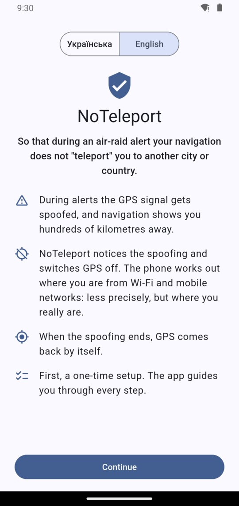
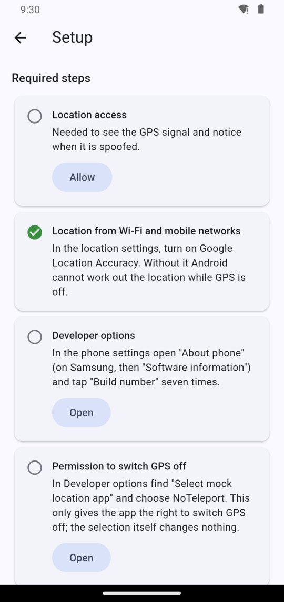
2Location access
In the step “Location access” tap “Allow”. In the window that appears, leave “Precise” selected and tap “While using the app”.
Why: to check the GPS signal and notice when it is spoofed. The location is processed on the phone and is not sent anywhere.
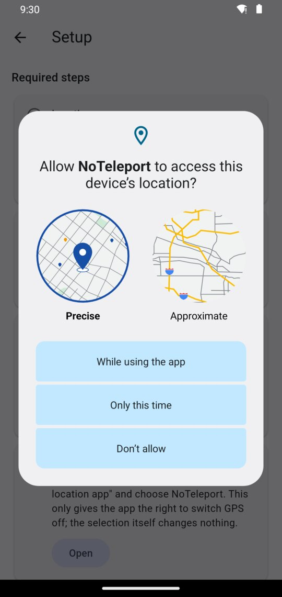
3Location from Wi-Fi and mobile networks
Usually this step is already green and there is nothing to do.
If it is not, tap “Open” and turn on Google Location Accuracy in the location settings.
Why: this is how the phone works out where you are while GPS is off.
4Developer options
Android lets only the app chosen in “Developer options” switch GPS off, so those have to be unlocked first. It is a standard feature of Android: by itself it changes nothing on the phone.
- In the step “Developer options” tap “Open”. The “About phone” screen opens.
- Find “Build number” at the very bottom and tap it seven times in a row. On Samsung the way is a little longer: “Software information”, and “Build number” there.
- If the phone asks for your PIN or pattern, enter it. “You are now a developer!” appears.
- Go back to NoTeleport with the Back button.
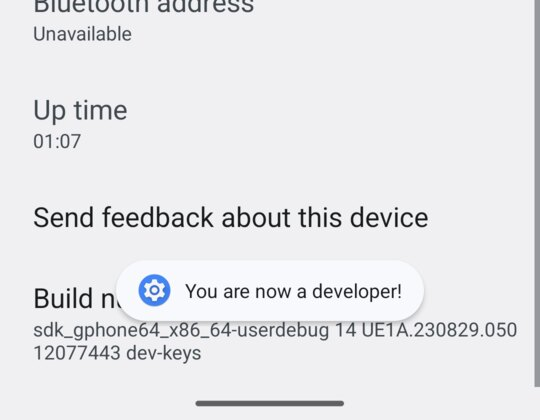
5Permission to switch GPS off
- In the step “Permission to switch GPS off” tap “Open”. “Developer options” open.
- Scroll down to the “Location” section. The list is long; this section is near its end.
- Tap “Select mock location app” and choose NoTeleport.
- Go back to NoTeleport.
The selection itself changes nothing: it only gives NoTeleport the right to switch GPS off while it is being spoofed.
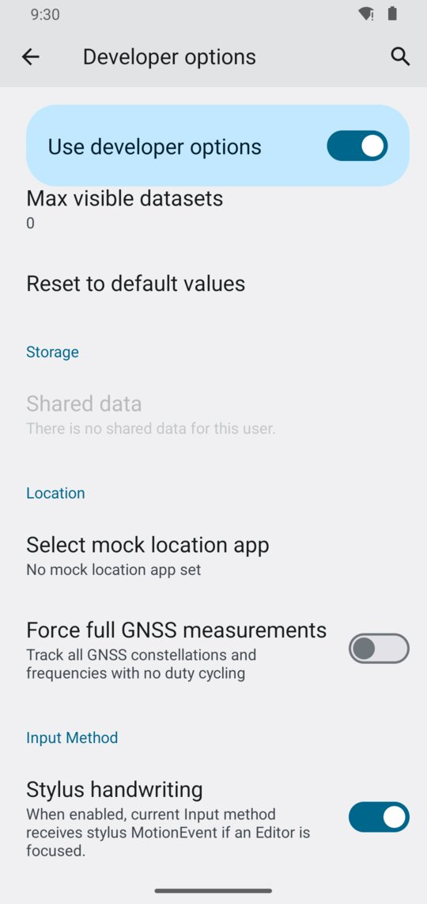
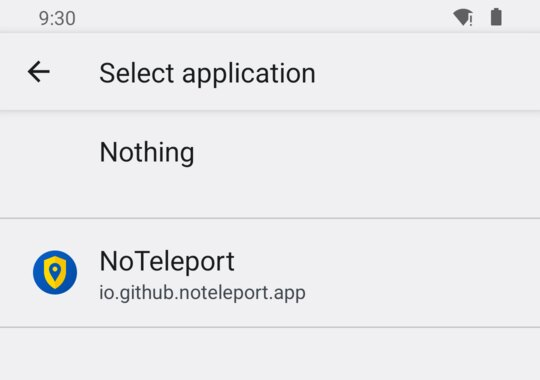
6Notifications
In the step “Notifications” tap “Allow”, and then “Allow” again in the Android window.
Why: the notification shows whether protection is on and whether GPS is being spoofed, and it has the button that turns protection off.
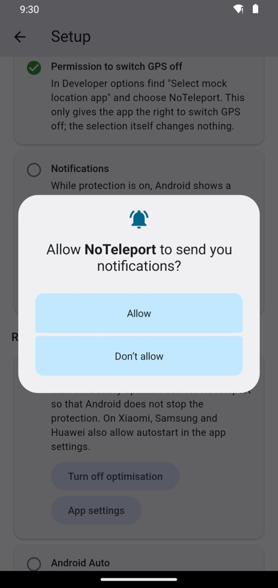
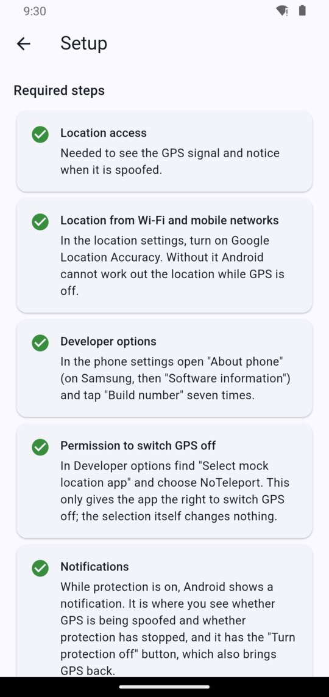
7Turn protection on
On the home screen choose “Protection from GPS spoofing”. There is nothing else to do: the app can be left in the background.
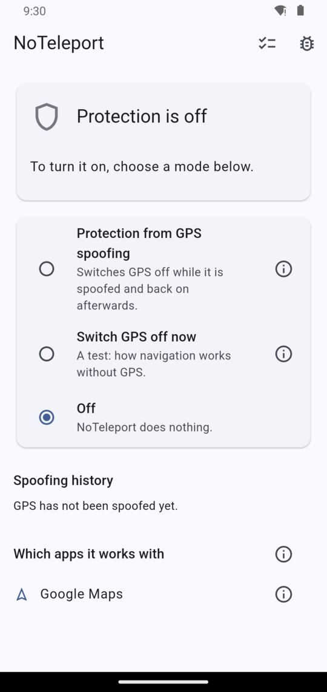
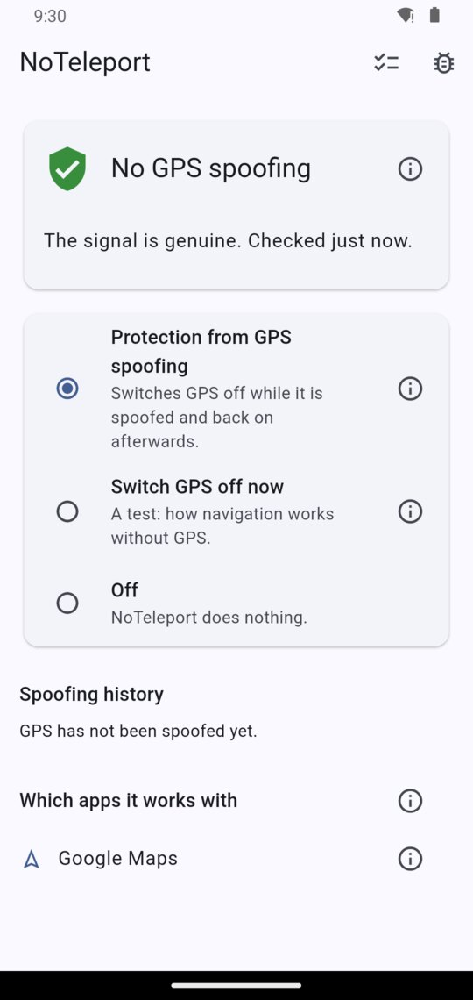
While protection is on, there is one NoTeleport notification in the shade:
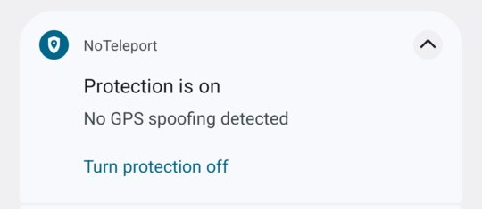
Recommended steps
They are lower in the same list. The app works without them, but more reliably with them.
Running in the background
So that Android does not stop the protection, tap “Turn off optimisation” in the step “Running in the background”. On Xiaomi, Samsung and Huawei also allow autostart in the app settings.
Android Auto
Only those who have Android Auto installed see this step. Android Auto may use the car's own GPS, which NoTeleport cannot switch off. If navigation in the car “teleports” you, remove Android Auto's location permission: it will then take the location from the phone.
Check how your navigation app copes
Do not wait for an alert to see what it will be like.
- In NoTeleport choose “Switch GPS off now”.
- Open your navigation app and see how well it shows where you are.
- To finish, tap “Turn protection on” in the notification, or choose another mode in the app.
What happens during spoofing
NoTeleport switches GPS off by itself, and the status changes to “GPS is being spoofed”. There is nothing to do. When the spoofing ends, GPS comes back by itself; that may happen a few minutes later.
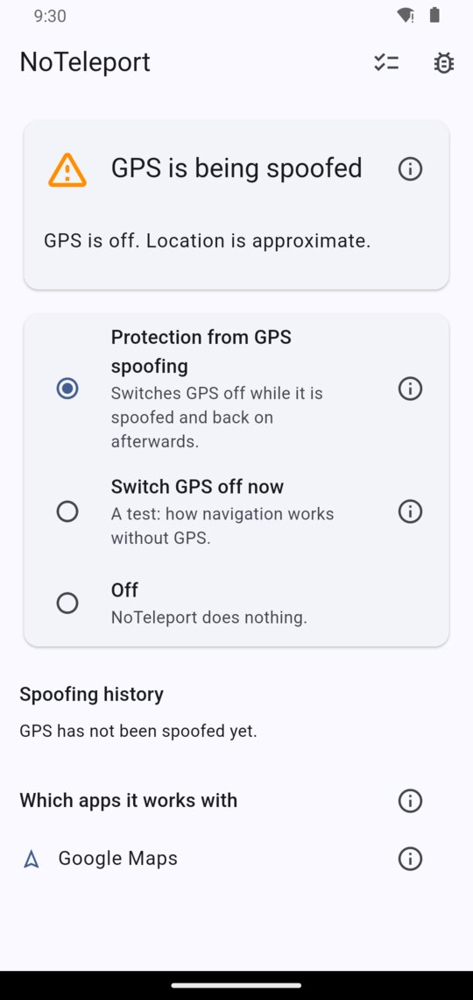
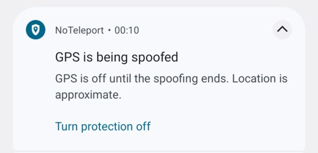
If something is wrong
- The notification “Protection has stopped”. Android closed the app. Open NoTeleport and protection turns on again. To make this rarer, do the recommended step “Running in the background”.
- The notification “Protection is not working”. NoTeleport is no longer the app chosen in Developer options. Repeat step 5.
- Anything else. Write: github.com/noteleport/noteleport.github.io/issues.